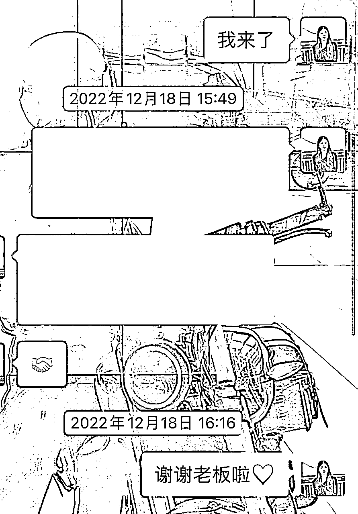

来源：https://wq71epaod4q.feishu.cn/docx/DvzYduRlVot6DdxNVImcGVWPnvc
各位大咖好，我是金珠，一个在浙江嘉兴嘉善小镇的做二房东的女生，这回我介绍一下我自己的副业！
上个月我分享了我老公开炸鸡店的经验，月入10w秘籍，有需要可以看
上篇中有介绍我做二房东的这个项目，就有很多圈友问如何做二房东？
那我今天我就来了！
二房东是我的副业！
我的主业是中介
那我为什么会找二房东作为我的副业？？
首先我是中介！
副业是我主业延伸的项目
很多家人不知道副业从哪里入手
可以看下我的思路，主业的延伸项目是副业，你可以看一下你的主业延伸出去能不能作为你的副业？
比如：我把客户带到二房东的房子进行成交，就可以拿到中介费（这个是我主业），我做二房东，无非把客户带到自己拿的房子进行成交，拿中介费➕租金（主业➕副业＝双倍收入）
我想说
首先你的主业是不是已经是一个稳定的基础了！
主业是你收入的主要来源
也是你的基础盘
不能因为寻找副业而把主业丢失，得不偿失！
副业是附加题，不是必选题！
副业是可以让你增加收入，让你成长的一个项目，但如果你目前生存（主业都难以生存，就先不要考虑副业）
但你如果有工作了！就是想给自己找份副业多一份收入？
那我反问你，你愿意给你副业每天投入多少时间？投入多少钱呢？？副业失败了会不会影响你主业的收入？
心理有答案了吗？有了就继续往下看！
换句话
什么职业的人，入局二房东更快上手？
他们之前给二房东装修房子，接触的都是二房东，那么他会知道房子怎么改造利润大，知道房子怎么装修客户喜欢，知道拿房什么价格划算，怎么经营房子稳定。后期房子内部维修问题自己也会剩下一笔费用
因为二房东就是他的前辈呀，怎么给别二房东装修的房子，自己复制就行了呀
就像我的身份，我就是中介，我接触的无非就是客户和房东，二房东干的就是借别人房子赚钱的，而我们接触的第一人群就是二房东！
二房东最开始需要拿房，那就需要中介，房子后期出租也需要中介，中介在整个流程中的身份可谓是非常重要。
中介对二房东的流程可谓了如指掌呀， 拿房什么价格最划算（拿房价格都是中介帮二房东谈的，肯定知道什么价格最划算，后期自己拿房肯定价格≤二房东价格），怎么装修，怎么出租等。
我同事们都是先做中介，了解市场，了解流程，再到自己拿房的
那我也是呀！
自己家里/村里 有认识做二房东的人，那他要做这个项目，他直接问这个知道的，得到的一手信息都是很准确。
拿房基本流程是一样的，有很多二房东都是家族企业，或者是一个村里都是做这个的。
那自己上手本身就快（比如：你要开超市，正好你爸以前就是开超市的，那你流程直接问你爸，不就啥都明白了嘛，二房东也同理）
又或者你不知道整个拿房流程，但你认识了我，我把我知道告诉你了，总比你自己在那里瞎摸索成功概率高的大把
找个已经走过的人带路，增加自己成功的概率！
二房东拿房除了中介公司还有就是物业！
物业是小区的管家呀，整个小区房子什么进度，业主什么想法（房子的出租/出售/毛坯/精装）都会和物业讲。
物业有一手资料信息，二房东拿房必会和物业打交道，后期二房东装修房子也要去物业审核，如果物业不批准，那不能动工
物业有大把的小区房源资源，二房东又要拍物业马屁，物业是不是占尽了天时地利人和（拿房过程中啥不会，直接问二房东就行）
总结一下：装修师傅，中介，周边有认识二房东的，物业工作的人，他们都是直接链接到二房东这个人，这个行业，那学习很方便，整个流程都了解到位了，那自己上手成功率肯定比纯小白高的很多！
对于二房东
我想说
如果你不是以上4个身份，直接入局我不建议哈！
但你就是很想入局！那你可以继续往下看
如果你目前没有工作，你可以去中介公司上班，也可以去小区物业公司上班，解决你工作问题，最主要有机会能触到二房东这个行业的，去了解赛道的流程，能降低你后期风险。（了解越多，对安全可控性越强）
其次在探寻这个项目在你们当地是否可行！
才可以判断你所在的市场适不适合拿房，如果可以，那你就拿房摇身一变包租婆。当你知道条件都符合了你还不拿，说明这钱和你无缘了
生财圈有看到二房东的帖子- --云飞大哥1800套的房子，每年2000多万，这个就是大资金盘！确实是行业大咖了！
但我分享的是二线小镇如何入局做二房东
不一定非要北上广才能拿房的案例！
我是2023年1月15号拿的第一套房子，有8间单间，8✖️900＝7200元 收入
（800平均，房子有800/900/1000/1100 ）
在2023年3月4号 拿了第二套房子，有7间，在第一套的前面 ，7✖️900＝6300元收入
在2023年3月8号，第三套房子也出来了，5间，5✖️800元＝4000元
3套房子收入 7200+6300+4000＝17500元
每个月电费能赚2000➕二房东总收入 1.95w
补充
我拿的房子是拆迁房，政府赔给当地人的房子是5层的别墅（没有产证），有大房东自己本身有地方住，拆迁赔偿的房子会考虑出租
因为托管稳定性＞散租（直接租给租客）
大房东会直接委托中介帮他房子进行托管，省事呀，房子托管给二房东，收租，收水电，只找二房东一个人即可！
不然房子散租，8间的房子，房东就要对接8个租客，一年一种8个租客会有流动，更新，维修东西等问题……
大房东为了省事，会把房子托管给二房东
备注：
像时间签约5年以上的房子且价格低于市场租房价格的形式，中介称为托管，二房东拿的就是托管的房子
像房东签约的房子时间≤3年，租金是市场价格的，中介称为散租，租客要的就是这样的房子
我们小镇单间价格500-1200区间浮动都有，看配置，看装修，看位置！
这是我拿的🏠
做中介期间，发现二房东天天来我们公司吹牛，当然也是让我们帮他出租房子，说明二房东时间很闲，但都是稳定收入呀！我在想这个可以干呀！完全是睡后收入呀！借别人的房子赚钱，可以搞！
因为我是中介，所以我对了解市场透彻，但作为新人做二房东，我们这个二三线小镇，客源怎么来？
怎么拿房？拿什么样的房子？我应该投诉多少钱？投资回报率咋样？风险高不高？？做单间？还是做两室一厅？
带着以上问题，我特地去淘宝买了二房东书籍，发现这类📚少的可怜呀，虽然我买的都是盗版的，但能学到有用才是王道！哈哈哈
一周全部看完！
总结下来：
实际：🈶可爱的租客大半夜回家钥匙搞丢了，让我送把过去！还有夏天房子跳闸问题还是蛮多的，我就开着毛驴15分钟就到了
总结：距离近，好打理房子！
实际：一套120平方的房子，3房2卫！装修费用4万，租金1600元，水电租客自己交给国家（民用水电）
1600×12/月×6年＝115200-40000＝75200 ---6年的租金收入
租客：房东给水/电/燃户号，租客自己交给国家的，房东无法赚差价
共计：75000/套/6年
一套120的平方房子，可以做成5个单间独卫，平均租金800元/月，装修费5万
5✖️800元×12/月×6年＝288000-50000＝238000 ---6年的租金收入
租客：电费1元/度，水费20元/人
75度/电×1元/度5×12/月×6年＝27000 ---6年电费收入
共计：265000/套/6年
同个房子，装修成本，投入成本一样，但产出结果不一样！
房子空置期怎么办？
合同签约正常是一年一签，期间租客违约，那就赔偿违约金，金额数量相当于租金数量
eg:小李找我签了一套800元/月租金的房子，期限1年，期间他违约，我就把押金吃掉，押一/押二的钱吃掉，因为他违约了。（800/1600被我吃掉了）
签合同的避开1月2月
比如：租客1月1号签的合同，合同1年，二房东/中介会说：过年找房不容易，你到3月份退租吧，找房子不容易。 租客不会在意1-2个月租期的
因为押金被吃，租客会采什么取措施？
不高兴，报警，也无济于事，合同在手，他理亏（合同办事）
损坏东西泄愤，我会报警让他赔偿，案件成立（恶意破坏别人东西）
押金被吃，他不交租的情况，继续赖在房子不走，我也会报警，案件成立（私闯民宅）
以上我都遇到过，都是租客理亏。
实际：很多客户可能刚开始看到房子大件物品都有（床，衣柜，桌子，热水器在）直接就定了，入租过程中发现和别人公用洗衣机很不卫生，会有租客把鞋子丢进洗衣机洗，所以要求房东多配洗衣机，但前期装修没预留管道（洗衣机进出水的管子），无法满足要求！那租客就要换房子了客户！
多为租客考虑，才能长期稳定收租
实际： 我刚开始做中介的时候，刚开始市面上单间不是很多的时候，装修差的，因为没有其他房子，没得选！租客只能租这种房子！
后期越来越多二房东加入进来，开始卷装修了，市面上大量新装修又温馨的房子出来，同等价位，租客肯定选择后者！
现在就是装修差的房子都租不掉了，温馨的房子都是满房的！
于是乎，装修差的二房东为了生存必须翻新呀！但成本就高了！（同一套房子投入装修2次的费用）
房子前期装修就要温馨！既可以老租客，又能吸引新租客
给中介费一定爽快！额外再给小红包给中介（中介给你介绍好房源成交时候）
中介算是二房东财神爷了！拿房中介少不了
上面经验真的价值百万了！如果你要入局二房东！
我就是根据书中理论拿房的！
拿的装修好的单间，配独立洗衣机！直接一步到位了！就不用走冤枉路！剩下多少冤枉钱呀。
因为我是中介身份，知道行情什么价格，所以我拿房的价格比市面上所有二房东价格低，而且还是原房东装修好的🏠
所以我拿房之前也是做了功课的，再结合当地情况！
我的第一套房子，是同行中介发现的，这个中介是老中介了，我们这些年轻人其实更加应该和同行老前辈打招呼，和老中介说有便宜的房子，记得告诉我，红包中介费一定不会少！
没想到有房子，他就真的第一个就想到我！当别人拿房价格是520元/间
而我这套房子450元/间，房东全赔配（就差洗衣机/冰箱），6个月免租期，我完全白嫖呀！
谈的押一付三 450✖️8间✖️4个月＝14400
当时手上只有1.5w
我就给大房东1.44w,还剩600元，但我要配洗衣机和冰箱
于是乎拿了这个房子我马上出租，为了更快变现，给租客的签约条件：别人押一付三，我押一付一即可！ 8✖️900＝7200元➕押金7200元＝14400 边拿租金的路上，边陆续配洗衣机和冰箱
我会可客户说洗衣机在路上，需要等一下，那个客户最急先给他安排洗衣机！
洗衣机在二手群里淘的，200元/个，质量都不错！后陆陆续续就把冰箱补齐了
eg:新的洗衣机600元/个，而且二手150-300/个，600元我可以买2-3个洗衣机呢。 不建议买新的洗衣机/冰箱，这个坑我踩过真不划算，投资成本高，租客也不会爱惜你的东西的）
复盘：
自己作为中介都要去拜访同行，因为同行是最好的老师，资源肯定也有你无法涉及的领域！如果你不是中介行业，那你入局二房东，也一定要和中介打交道！
你把中介这边拿稳了，他会帮谈的！6个月免租期呀！真的很香，很多二房东拿房条件都没我这个好，价格没有我这么低，而且我还有免租期呀！纯属白嫖呀～ 看我怎么和中介对话的

最后中介拿钱开心，我更开心哈哈哈❤！
我们这个小镇的边上有很大开发区，一片的电子厂，里面有个大佬就是-立讯精密电子厂，有几万的人口流动！
有圈友会问，电子厂不是包吃住，谁会出来租房？
首先电子厂宿舍都是8人间，没有夫妻房呀！宿舍再好8人间，肯定有很多人不习惯，有对象更不习惯，而且厂外宿有补贴呢！
普通员工 300/人，小领导500/人
两个人600，两个人1000
自己贴200可以出来住房了，还自由，还有对象！所以出来租房的人并不少！
厂区里镇上也就3.5公里距离，出来租房子，必须选这个小镇，其他没住宅区了！
eg:我的拿房周边就有一大片厂区，二房东很多
eg：杭州下沙大学城那边二房东就很多
eg:我们县城有 银泰/万联城/汇金大厦/世博大酒店 这块区域二房东也不少
eg:上海郊区地铁口周边的房源基本都是二房东的
复盘总结：
哪里人多，选哪里，有人才有钱，人口流动的较大的地方
为什么最早一批二房东在北上广，那边人口流动大呀，这是底层逻辑
单间肯定＞2房＞3房＞4房
单间同个房子价格600-900浮动 -抗分险能力稳定
2房价格1100-1600浮动 -抗分险能力差
1个人，2个人，3个人也是选择单间！
2房 要么合租/要么一家人 （但这边这种客户群体较少）
从2房开始，➕个100元＝3房价格
3房1卫➕100元＝3房2卫
套房和单间价格价格差距不大，对于租客来说划算，但对于拿房条件来说不是很好
后期房子数量多，可以套房也可以少量拿，单间和套房的比值：5:1
这个是我们当地的情况，如果你们套房和单间价格差距大，就有利润空间大，可以多拿几套。
对于新手建议，可以从第一套入手，免租期越多越好！在付款方式！
实在不行，那就免租期多给，付款方式从付三到半年付或者年付！（如果手上钱不多那就付款方式少付，免租期少要，因为谈判过程中房东不愿意自己吃很多亏的，所以我们也要适当让步，条件可以即可签约）
我就是拿已经装修过的房子，自己投入洗衣机就可以出租了！
总之 降低成本
新手拿简装房子，不要拿毛坯房
合同期6年/8年/10年都可
有人会问？签约那么长！中期遇到不赚钱咋整？？
碰到过二房东，中期不做了，合同上有写赔付双方违约金5万/8万。
但最后的结局就是二房东直接就走了，违约金也没有赔，就是把房子直接退给房东了
就算后期走法律程序，其实根本根本没用，其实写的合同是为了制约大房东，不是限制二房东的自由
为什么要签约那么长时间？
那我反问你不签约这么长，你怎么赚钱？
你拿房不可能都会遇上房东装修好的，如果遇到最好
遇不上就是毛坯拿来，自己需要投入装修成本，前1-2年回本，后期都是利润呀！
所以时间越长越赚钱呀！
签时间较长的合同对于二房东的立场来说是划算的。
找中介呀！（多找几家，撒网式）
贴广告！发抖音！发58（中国经纪人端口）
和门卫保安说，成交给他发红包！
物业！
1.免租期足够长
2.拿装修过的房子，不要拿毛坯房
eg:向大房东多要免租期1-6个月，我就要到了6个月的免租期，房子已经装修过了，只要简单改造下就可出租，改造时间1个月不到，剩下的5个月都是净赚的利润呀。
一套房投入5000改造费，租金800，第六个月就回本了，之后的每个月都是利润，还有5个月的免租期，都是躺赚
拿房过程中就会碰到装修师傅，微信加上，房子前期需要改造/装修肯定需要他们，后期维修就可以找师傅了，应该多少钱就多少钱，基本维修150元，我就会给师傅200元，后期维修事情很多，还是需要师傅的
或者有人自己对维修本身就很上手，那就简单多了，自己弄，花点时间，不花钱
合同中一定要写免租期时间
双方违约赔付违约金额，
如果房子改造群租房，就写允许自由装修
二房东的收入的稳定性很高，如果想一夜暴富，这个不适合，这个行业是细水长流的，赚的多就多拿房子了！
有个大哥50多套！一年180w肯定有，但人家投入的也多的！
刚开始入局不需要那么高目标
我最开始给自己定目标2间，最后没想到拿了20间！这个裂变很快的，有好房源就拿！
希望以上内容分享能给想入局二房东市场的圈友一点方向！
市场调研你当地适合拿房，且你流程都明白，有点资金，就可以入局了！